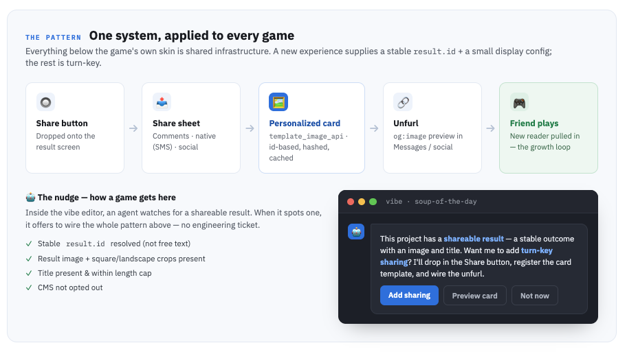
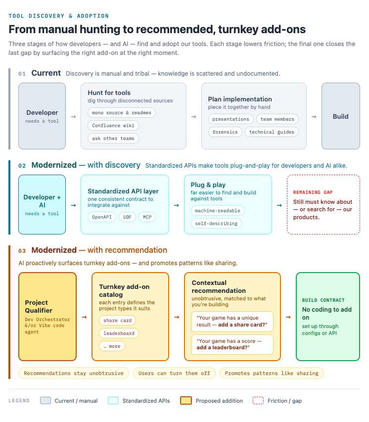
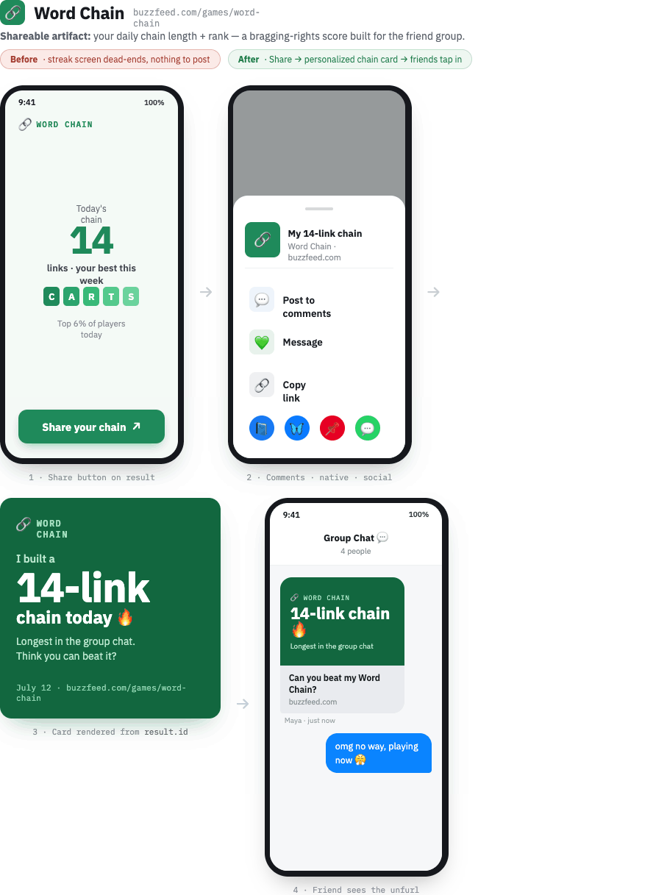
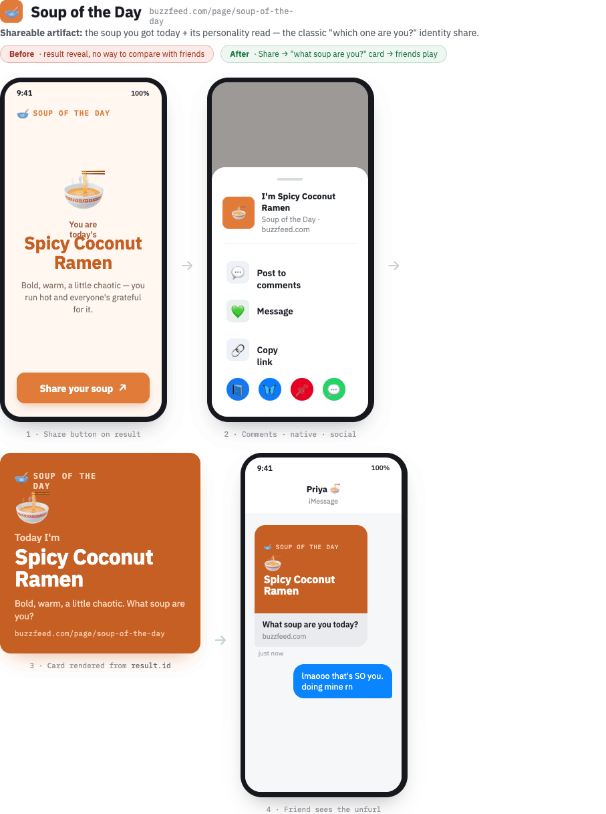
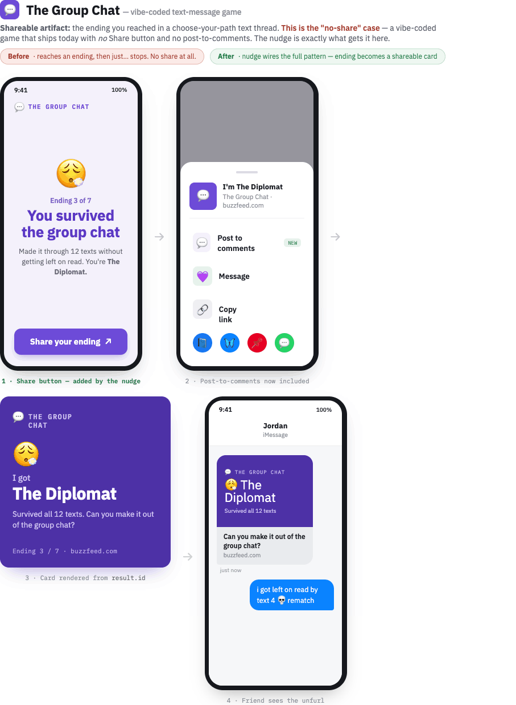

A concept I designed to turn the proven personalized-share pattern into a paved road any game or team could adopt on its own.
My own concept and designs, explored for BuzzFeed's games. Never implemented internally or publicly; shown here as a proposal.
Tag Yourself proved that a personalized, generated share card drives real sharing. The obvious next move was to stop rebuilding that flow by hand for each surface. Turnkey sharing is the concept I designed to make it a paved road: one shared system, a small per-game config, and a self-service path so any game could add personalized sharing without a bespoke, multi-repo integration.
Everything below a game's own skin is shared infrastructure. A new experience supplies a stable result.id plus a small display config; the rest is turn-key: a Share button on the result, a share sheet (comments, native, social), a personalized card rendered by the image-template platform, and a friend-ready unfurl that pulls new players in. The nudge is how a game gets there: inside the vibe editor, an agent detects a shareable result and offers to wire the whole flow, no engineering ticket required.

How a team — or an AI agent — finds and adopts a turnkey add-on, in three stages that each lower friction: manual tool-hunting today, then a standardized discovery layer, then proactive recommendation — a Project Qualifier → turnkey add-on catalog → contextual recommendation → build contract (no coding to add on; set up through config or API).

The same drop-in system snapped onto three experiences. Each keeps its own skin; each gets a Share button, a personalized card, and a friend-side unfurl.
Word Chain — the shareable artifact is your daily chain: a bragging-rights score built for the friend group. Before, the streak screen dead-ended with nothing to post; after, Share produces a personalized chain card and a friend taps in.

Soup of the Day — players already paste the green results grid into comments. The card promotes that self-invented share to an off-platform artifact with a link back.

The Group Chat (the "no-share" case) — a vibe-coded text game that ships with no Share button at all. The nudge is exactly what gets it there: it adds the button, registers the card template, and wires the unfurl.

Each game had a few directions, all rendered server-side from edition id + solve state (no free text, so they are defacement-proof by construction):